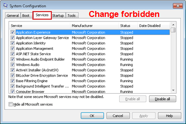
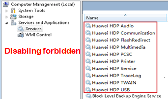
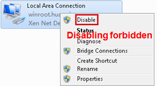
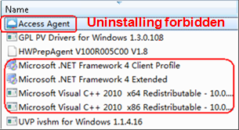

| Home > Forbidden operation > Forbidden operation (1) |
| WI Onlinehelp |
| Forbidden operation (1) Forbidden operation (2) |
|
1. Forbidden to Change services and startup options in the System Configuration Utility dialog box. |
2. Forbidden to disable the HDP services shown in the red box of the following screenshot. |
|  |  |
|
3. Forbidden to disable the VM NIC, and disable or modify the network configuration. |
4. Forbidden to Uninstall the programs shown in the red box of the following screenshot. |
|  |  |